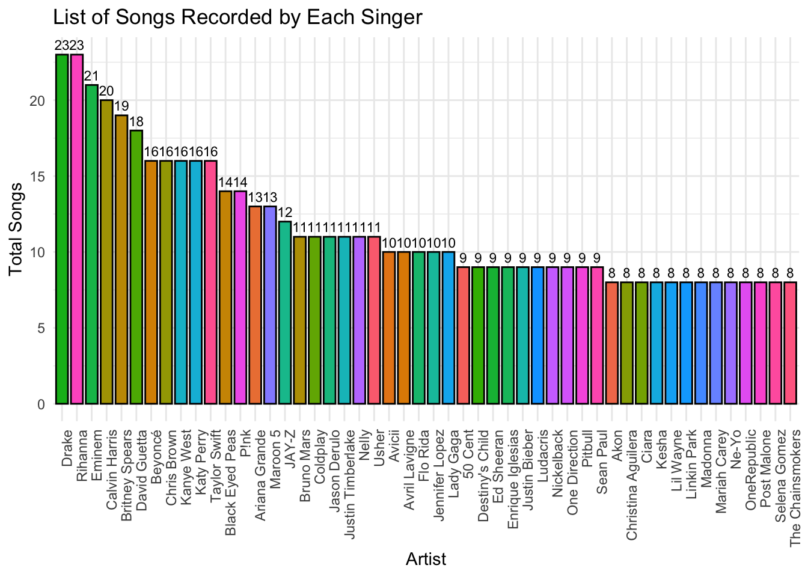

# Group by 'artist' and count the number of songs, then sort by 'song' count in descending order and select top 50df_grouped <- df %>%group_by(artist) %>%summarise(song =n()) %>%arrange(desc(song)) %>%head(50)df_grouped
# A tibble: 50 × 2
artist song
<chr> <int>
1 Drake 23
2 Rihanna 23
3 Eminem 21
4 Calvin Harris 20
5 Britney Spears 19
6 David Guetta 18
7 Beyoncé 16
8 Chris Brown 16
9 Kanye West 16
10 Katy Perry 16
# ℹ 40 more rows
df_grouped$artist <-as.character(df_grouped$artist)# Create bar plotggplot(df_grouped, aes(x =reorder(artist, -song), y = song, fill = artist)) +geom_bar(stat ="identity", width =0.8, color ="black") +labs(title ="List of Songs Recorded by Each Singer", x ="Artist", y ="Total Songs") +geom_text(aes(label = song), vjust =-0.5, size =3) +theme_minimal() +theme(axis.text.x =element_text(angle =90, hjust =1)) +guides(fill =FALSE)
Warning: The `<scale>` argument of `guides()` cannot be `FALSE`. Use "none" instead as
of ggplot2 3.3.4.

5. popularity vs songs, top 25 songs (line graph - connecting the points)
# A tibble: 25 × 2
popularity song
<dbl> <chr>
1 89 Sweater Weather
2 88 Another Love
3 87 Without Me
4 86 The Real Slim Shady
5 86 Wait a Minute!
6 86 lovely (with Khalid)
7 85 'Till I Collapse
8 85 Locked out of Heaven
9 85 Daddy Issues
10 85 The Nights
# ℹ 15 more rows